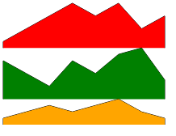
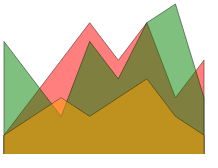
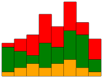
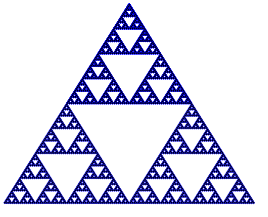
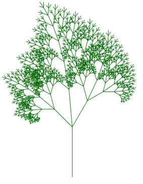
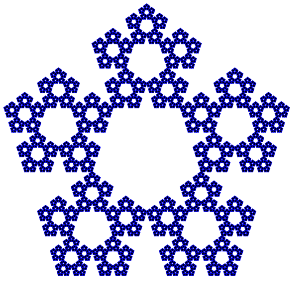

Вооружившись знаниями о моноидах, построим гибкую и расширяемую систему для вывода графики, использующую общедоступный web-интерфейс. Наша система будет представлять собой небольшой встроенный предметно-ориентированный язык (EDSL) для декларативного описания графики. Этот язык будет транслироваться в изображения формата SVG (Scalable Vector Graphics) — это текстовый формат, используемый веб-браузерами и многими векторными графическими редакторами, такими как
Опишем возможности разрабатываемого языка. С его помощью можно:
Определим тип Primitive для представления двух (для начала) графических примитивов: точек и ломаных линий. Изображение будет представлено типом Picture, объединяющим множество примитивов:
data Pt = Pt Float Float deriving Show data Primitive = Point Pt | Line [Pt] deriving Show data Picture = Picture [Primitive] deriving Show contents :: Picture -> [Primitive] contents (Picture c) = c
Сразу продумаем как можно комбинировать примитивы и изображения. Самый непротиворечивый способ — накладывать их друг на друга, то есть, изображать на одном холсте.
<> |
= |
Более того, изображения образуют моноид с операцией наложения (убедитесь мысленно, что наложение ассоциативно). Определим экземпляр классов Semigroup и Monoid для типа Picture:
instance Semigroup Picture where Picture p1 <> Picture p2 = Picture $ p1 <> p2 instance Monoid Picture where mempty = Picture mempty
У всех этих функций первый аргумент — это координата нижнего левого угла фигуры, другие агрументы задают ширину и высоту фигуры.point :: (Float, Float) -> Picture line :: [(Float, Float)] -> Picture rectangle :: (Float, Float) -> Float -> Float -> Picture square :: (Float, Float) -> Float -> Picture triangle :: (Float, Float) -> Float -> Float -> Picture
house = walls <> window <> roof where walls = ... roof = ... window = ...
В формате SVG наши примитивы представляются в виде строк:
"<circle cx='x' cy='y' r='1'/>"
"<polyline points='x1,y1 x2,y2 ...'/>"
SVG — это текстовый формат. Для того, чтобы упростить его генерацию воспользуемся функцией printf из библиотеки Text.Printf для форматирования строк по шаблону. Вот примеры её работы:
printf "%s said: '%s'" "John" "Hello!" :: String "John said: 'Hello!'" printf "x=%f, y=%f" 4.0 5.0 :: String "x=4.0, y=5.0"
В формате SVG можно представлять отдельные координаты, примитивы и целые изображения, то есть, объекты различных типов. Для того, чтобы делать это единообразно, определим собственный класс типов для всего того, что может быть экспортировано в SVG:
class SVG a where toSVG :: a -> String
Его можно воспринимать, как интерфейс, предоставляющий для всех экземпляров этого класса функцию toSVG. Каждый тип-экземпляр этого класса будет реализовывать его по-своему. Вот, например, как это можно сделать для типа Pt:
instance SVG Pt where toSVG (Pt x y) = printf "%f,%f " x y
Работая с классами типов можно пойти на некоторые удобные хитрости. Например, если мы знаем как транслировать в SVG какой-то объект a,
В этом определении мы используем то обстоятельство, что элементы SVG (строки) образуют моноид. Теперь можно единообразно транслировать как отдельные координаты, так и их списки:instance SVG a => SVG [a] where toSVG = foldMap toSVG
toSVG (Pt 1 2) "1.0,2.0 " toSVG [Pt 1 2, Pt 3 4, Pt 2 6] "1.0,2.0 3.0,4.0 2.0,6.0 "
SVG для типа Primitive:
instance SVG Primitive where toSVG p = case p of Point pt -> _ Line pts -> _
Сами примитивы ещё не образуют полноценного изображения. Для того, чтобы можно было увидеть картинку, нужно объединить примитивы в такую структуру:
"<svg width='_' height='_' fill='none' stroke='blue'>...</svg>"Здесь аттрибуты width и height задают размеры изображения, параметры fill и stroke задают графические атрибуты, используемые по умолчанию.
SVG для типа Picture, задав фиксированные размеры изображения, скажем, 400×300.writeFile и убедитесь в том, что изображение открывается в веб-браузере. Создайте вспомогательную функцию writeSVG для удобного экспорта изображений в файл. writeSVG :: String -> Picture -> IO ()
для правильных многоугольников заданного размера (размер задаётся радиусом описанной окружности). Первый аргумент определяет центр пногоугольника.polygon :: (Float, Float) -> Int -> Float -> Picture
Правильнее было бы не фиксировать размеры поля изображения в SVG-описании, а вычислять его, находя минимальные и максимальные значения координат примитивов. Эта информация будет нужна нам и для размещения изображений друг относительно друга.
При объединении изображений объединяются и их обрамляющие рамки. Это означает, что они могут образовывать моноид и этим стоит воспользоваться. Создадим синоним типа для обрамляющей рамки:
В этом типе первая пара задаёт левый нижний угол изображения, а вторая – правый верхний. Для того, чтобы использовать полугруппыtype Box = ( (Min Float, Min Float) , (Max Float, Max Float) )
Min и Max, экпортируем их (и только их) из библиотеки Data.Semigroup. Для того, чтобы типimport Data.Semigroup (Min(..), Max(..))
Box стал моноидом, определим минимальную и максимальную границы значений координат.
instance Bounded Float where minBound = -1/0 maxBound = 1/0
Размеры изображения складываются из размеров примитивов, его составляющих. Значит, имеет смысл определить класс для всех типов, имеющих размер. Создадим такой класс, и определим пару универсально полезных функций, имеющих смысл для всех экземпляров класса:
class Boxed a where {-# MINIMAL box #-} box :: a -> Box width :: a -> Float width p = x2 - x1 where ((Min x1,_),(Max x2,_)) = box p height :: a -> Float height p = y2 - y1 where ((_,Min y1),(_,Max y2)) = box p instance Boxed a => Boxed [a] where box = foldMap box
Так, например определяется экземпляр Boxed для точки:
instance Boxed Pt where box (Pt x y)= ((Min x, Min y), (Max x, Max y)) width _ = 0 height _ = 0
Обрамляющую рамку изображения можно вычислить по его примитивам, но делать это всякий раз, как она потребуется не эффективно. Вместо этого, мы включим рамку в определение типа Picture:
data Picture = Picture (Box, [Primitive]) deriving Show contents :: Picture -> Primitive contents (Picture (_, c)) = c instance Boxed Picture where box (Picture (b, _)) = b
Поскольку пара моноидов тоже образует моноид, мы таким образом получим моноидальные свойства рамок и картинок "автоматически", ничего не изменяя в определении экземпляра Monoid Picture.
Boxed Primitive. Используйте моноидальные свойства типа Box при вычислении рамки для примитива Line.point, line, square, ...
Для этого имеет смысл определить вспомогательную функцию primitive, которая выполняла бы необходимые вычисления обрамляющей рамки для формируемого изображения:
primitive :: Primitive -> Picture primitive p = Picture (box p, [p])
Boxed универсальную функцию corner, возвращающую углы обрамляющей рамки изображения, или примитива
и четыре селектораcorner :: a -> (((Float,Float), (Float,Float)) ,((Float,Float), (Float,Float)))
left, right, upper, lower
так, чтобы можно было бы получить, например, правый нижний угол изображения с помощью выражения:
right . lower . corner :: Picture -> (Float, Float)
Давайте научимся двигать изображения. Существует класс преобразований плоскости, называемый афинными, при котором параллельные прямые переходят в параллельные прямые, пересекающиеся в пересекающиеся, скрещивающиеся в скрещивающиеся. К ним относятся движения: сдвиги, повороты и преобразования подобия.
Любое афинное преобразование вектора
Приведём три основные вида преобразований:
M a, созданный на прошлом занятии:
rotateM :: Float -> M Float tranlangateM :: Float -> Float -> M Float scaleM :: Float -> Float -> M Float reflectM :: Double -> M Float
Применять афинные преобразования можно к разным объектам: точкам, примитивам и целым изображениям. Это наводит на мысль о классе типов Affine, который абстрагирует это свойство и определяет оператор афинных преобразований affine:
class Affine p where affine :: M Float -> p -> p
Pt, Primitive и Picture. Используйте для этого обобщённый экземпляр для списка:
instance Affine a => Affine [a] where affine t ps = _
-- масштабирует координату x scaleX :: Affine a => Float -> a -> a -- масштабирует координату y scaleY :: Affine a => Float -> a -> a -- одинаково масштабирует обе координаты scale :: Affine a => Float -> a -> a -- приводит изображение к указанным размерам rescaleTo :: (Boxed a, Affine a) => Float -> Float -> a -> a -- параллельный перенос изображения shift :: Affine a => Float -> Float -> a -> a -- поворот на угол, задаваемый в градусах вокруг центра координат rotate :: Affine a => Float -> a -> a -- поворот вокруг указанной точки rotateAt :: Affine a => (Float, Float) -> Float -> a -> a -- отражение относительно линии, -- проходящей через начало координат под указанным углом reflect :: Affine a => Float -> a -> a -- отражение относительно линии, -- проходящей через указанную точку под указанным углом reflectAt :: Affine a => (Float, Float) -> Float -> a -> a
let s = square (0,0) 50 s <> rotate 45 s s <> shift 10 30 s s <> (scaleX 2 . scaleY 3) s s <> rotate 60 s s <> (shift 30 0 . rotate 60) s s <> (rotate 60 . shift 30 0) s s <> reflect 30 s s <> reflectAt (50,0) 30 s
Primitive конструктор Circle Pt Float для окружности. Окружность, которую можно транcформировать произвольной матрицей (увеличивать, превращать в эллипс и т. д.) можно построить с помощью функции polygon с большим числом углов.Picture содержит в себе информацию об области, обрамляющей изображение, и эту информацию можно использовать для приведения всех координат изображения в видимую область положительных координат. Измените определение функции toSVG для типа Picture так, чтобы перед выводом ось ординат направлялась вверх, а минимальные координаты изображения перемещались в начало координат. polygon и circle, а также ограничиться только размерами при конструировании квадрата и прямоугольника. Упростите определения этих конструкторов и введите простой оператор at, задающий абсолютные координаты левого нижнего угла изображения. С его помощью, например, можно было бы построить квадрат с вписанной в него окружностью и расположить его в координатах (circle 25 <> square 50) `at` (100, 100)
scale 2 <> scale 3 $ polygon 5 50 rotate 30 <> (`at` (40, 40)) $ square 10
mrepeat:
mrepeat n f = mconcat . take n . iterate f
mrepeat постройте картинку, задаваемую выражением:
mrepeat 48 (rotate 7.5) $ square 50 `at` (25, 25)
above и beside. Напишите их определение так, чтобы при результаты были такими, как показано на рисунке:
circle 30 `beside` square 40
circle 30 `above` square 40
row и column, которые располагали бы список изображений в виде ряда или колонки. Например так:
row $ circle <$> [4,8,16,32,16,8,4]
chart :: Picture -> [Int] -> Picture, которая строила бы диаграммы для списков целочисленных значений, как показано на примере:
chart (square 10) [1,2,1,2,3,2,1,4,2,3,6,5,4,3,4,3,1,2,1]
barChart :: [Double] -> Picture, которая строила бы столбчатую диаграмму для числовых списков, используя ширину столбца 1:
rescaleTo 200 100 $ barChart [1,2,3,2,3,4,5,4,3,2]
Добавим нашему языку красок! Изменение атрибутов примитивов и изображений можно тоже рассмативать, как преобразование Picture -> Picture. Значит, их можно смешивать с другими преобразованиями такого типа с помощью композиции:
(rotate 45 . color "black" . fill "red" $ square 50) <> (opacity 0.5 . fill "blue" $ circle 30) <> (color "orange" . lineWidth 5 $ line [(-40,40),(40,-40)])
Для стилей имеет смысл определить специальный тип:
data Attribute = LineColor String | Fill String | LineWidth Float | Opacity Float deriving (Show, Eq)
В формате SVG для атрибутов принято единообразное обозначение: attribute='value'. Перечисленным в типе Attribute конструкторам соответствуют следующие параметры элементов SVG:
LineColor | |
Fill | |
LineWidth | |
Opacity |
Определим экземпляр класса SVG для типа Attribute.
instance SVG Attribute where toSVG attr = case attr of LineColor c -> printf "stroke='%s' " c Fill c -> printf "fill='%s' " c LineWidth w -> printf "stroke-width='%f' " w Opacity o -> printf "fill-opacity='%f' stroke-opacity='%f' " o o
Имеет смысл присваивать стиль не каждому примитиву, а целым группам. Это соотвествует духу формата SVG, в котором существует элемент g, группирующий другие элементы. Группа, для которой установлены атрибуты, декларируется следующим образом:
<g stroke="red" fill="blue">...</g>
Primitive конструктор для группы примитивов Group [Attribute] [Primitive] и расширьте все определения функций над примитивами.
введите преобразователи стиляsetAttr :: (t -> Attribute) -> t -> Picture -> Picture setAttr attr c p = case p of Picture (b, [Group a p]) -> Picture (b, [Group (a <> [attr c]) p]) p -> primitive $ Group [attr c] (contents p)
lineColor :: String -> Picture -> Picture -- цвет линии fill :: String -> Picture -> Picture -- цвет заливки color :: String -> Picture -> Picture -- одинаковый цвет линии и заливки lineWidth :: Float -> Picture -> Picture -- толщина линии opacity :: Float -> Picture -> Picture -- прозрачность фигуры
opacity 0.6 $ (fill "navy" $ barChart [1,2,4,8,9,3,1]) <> (fill "orange" $ barChart [12,8,3,2,1,4,8])
Построенный нами встроенный язык построения изображений имеет несколько замечательных свойств:
Построение линейчатой диаграммы по таблице данных
lineChart = line . trim . zip [0..] where trim l = (0,0) : l ++ [(fst (last l),0)]
fill "goldenrod" $ lineChart [3,2,6,4,8,4]
Так можно раскрасить несколько изображений, чередуя цвета:
colorizeWith colors ps = zipWith color (cycle colors) ps
row . colorizeWith ["green","gray"] $ circle <$> [3,6..20]
Пусть нам дана таблица данных:
Можно построить несколько диаграмм по ряду таблиц значений несколькими способами:table = [[1,3,5,7,5,7,3,5] ,[6,4,2,6,4,7,8,3] ,[1,2,3,2,3,4,2,1]] :: [[Float]]
manyCharts colors tbl = col charts where charts = colorizeWith colors $ lineChart <$> tbl

manyCharts ["red","green","orange"] table
overlayCharts colors tbl = opacity 0.5 $ mconcat charts where charts = colorizeWith colors $ lineChart <$> tbl

overlayCharts ["red","green","orange"] table
stackCharts colors tbl = row charts where charts = stack <$> transpose (reverse tbl) stack lst = col $ colorizeWith colors $ rectangle 1 <$> lst

stackCharts ["red","green","orange"] table
sierp n = rotate (-135) $ mrepeat n tri $ circle 1 where tri t = t `above` (t `beside` t)

rescaleTo 200 200 sierp
tree = mrepeat 7 (mconcat model) stem where stem = line [(0,0), (0,1)] model = [ shift 0 1 . scale 0.6 . rotate (-30) , shift 0 1 . scale 0.7 . rotate 5 , shift 0 1 . scale 0.5 . rotate 45 ]

scale 200 $ color "darkgreen" tree
pentaflake = (!! 5) $ iterate model $ polygon 5 1 where model = foldMap copy [0,72..288] copy a = scale (1/(1+x)) . rotate a . shift 0 x x = 2*cos(pi/5)
scale 200 pentaflake
plot
которая строит график произвольной числовой функции в указанных пределах по осиplot :: (Float -> Float) -> (Float, Float) -> Picture
Удостоверьтесь в том, что графики можно комбинировать, например, так:rescaleTo 400 300 . lineColor "blue" $ plot sinc (-15,15)
(color "red" $ plot sinc (-15) 15) <> lineWidth 0.5 ((color "blue" $ plot sin (-15) 15) <> (color "green" $ plot (1/) 0.3 15))